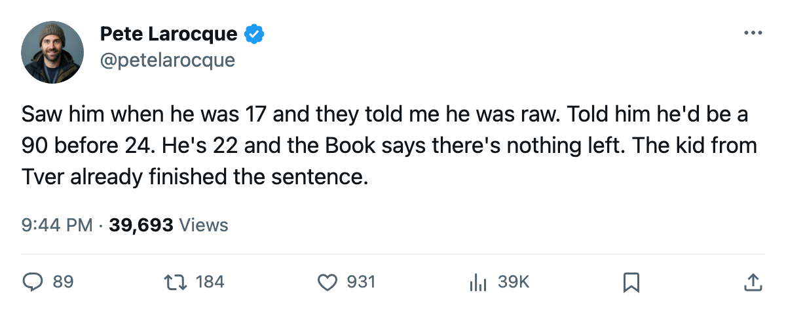
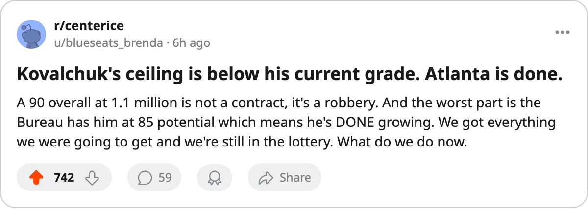

138 Points at 22, and the Bureau's Ceiling Is Below His Floor
Ilya Kovalchuk turned 22 on April 15. His overall is 90. His potential grade is 85. He is the only under-23 in the league whose base grade sits above the number meant to describe his limit.
 Pete LarocqueScouting editor · The Prospect File
Pete LarocqueScouting editor · The Prospect File
 Ilya Kovalchuk90 finished the season with 138 points in 79 games for
Ilya Kovalchuk90 finished the season with 138 points in 79 games for  Atlanta Thrashers. The Bureau's Book has him at 90 overall today. The Bureau's potential grade is 85. He passed the ceiling figure before his 23rd birthday.
Atlanta Thrashers. The Bureau's Book has him at 90 overall today. The Bureau's potential grade is 85. He passed the ceiling figure before his 23rd birthday.
The Bureau's potential grade is a projection of how much more a player will become. It is a likelihood built from what the graders read in a body and a game. When a player's base grade, stripped of the Development Index bonus, already exceeds his potential, the projection has stopped working. Across every under-23 tracked in this year's Book, exactly one man's base grade sits above his potential by more than 1 point. Kovalchuk exceeds his by 4.
The numbers the Bureau cannot move
His shot power reads 99. His speed reads 99. Acceleration 98, agility 97, deking 94, heroics 94. The physical tools are at or near the top of the scale. The weaknesses the Bureau flags are a 50 in fighting, a 51 in injury resistance, and a 51 in puck recovery. A summer program does not fix those. The Book has no room to grow him because it has already run out of room at the top and the bottom is structural.
Kovalchuk is on $1.10M with 1 year remaining. Atlanta Thrashers finished with 84 points, 5th in the Southeast. His wingers carry the same names the team has relied on since the 2000 draft brought  Dany Heatley88 second overall and 2001 brought Kovalchuk first. Heatley is 88 overall, 131 points. Between them, 269 of the club's 274 goals pass through their line or at least their side of the ice. It was not enough for October.
Dany Heatley88 second overall and 2001 brought Kovalchuk first. Heatley is 88 overall, 131 points. Between them, 269 of the club's 274 goals pass through their line or at least their side of the ice. It was not enough for October.
The birthday that makes it worse
Kovalchuk was born April 15, 1983, in Tver, Russia. He was 17 when Atlanta Thrashers selected him first overall in June 2001, the first Russian drafted to the top of the league's entry draft. He turned 18 six weeks before his first training camp. He was among the youngest men in that class.
Four seasons later, the youngest player in his draft group has reached the grade the Bureau projected for an older version of himself. The only other under-23 whose base grade touches his potential is  Marian Gaborik96 at
Marian Gaborik96 at  Toronto Maple Leafs, where the gap is 1 point. Kovalchuk's gap is 4.
Toronto Maple Leafs, where the gap is 1 point. Kovalchuk's gap is 4.
What a club does with a finished 22-year-old
Atlanta's young core is Kovalchuk at 22 and Heatley at 23. First-rounders from 2000 and 2001, both on the wrong side of the salary structure now. Kovalchuk's deal expires in 1 year. At $1.10M he is the cheapest elite player in the league by any measure the Bureau tracks.
The potential grade says he will not improve. The 85 is the number the graders set for what he could become, and he cleared it before the age he was supposed to be finding it. You build a team around what is here, now, at 90.
The alternative is a trade. A 90-overall 22-year-old with 1 year left at $1.10M carries value the market will price high. His 85 potential means the buyer gets the finished product at the start of the prime years. Every club with cap room and a gap at left wing is on the phone by July 1.
Atlanta missed the playoffs by 5 points. Kovalchuk scored 63 goals. The team scored 274. The club needs more scoring, and the player will cost more. The Bureau says neither number gets better or worse. He has been this player for a year now.

